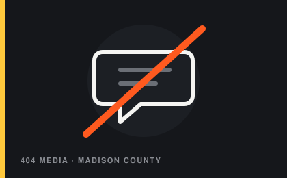
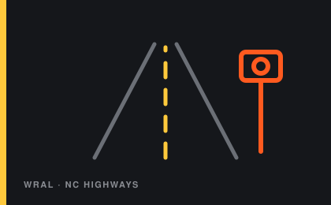
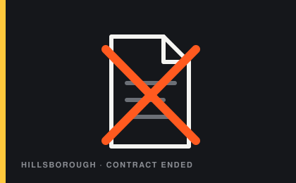

A running feed of DeFlock NC's own reporting and the North Carolina coverage we're tracking. Seen something in your town? Get in touch.
Reporting from North Carolina and national outlets on Flock, the SBI highway program, and the towns pushing back. Images identify each source; links go to the original articles.



If a board near you is voting on Flock, or you've filed records worth sharing, we want to hear about it.
Contact us →